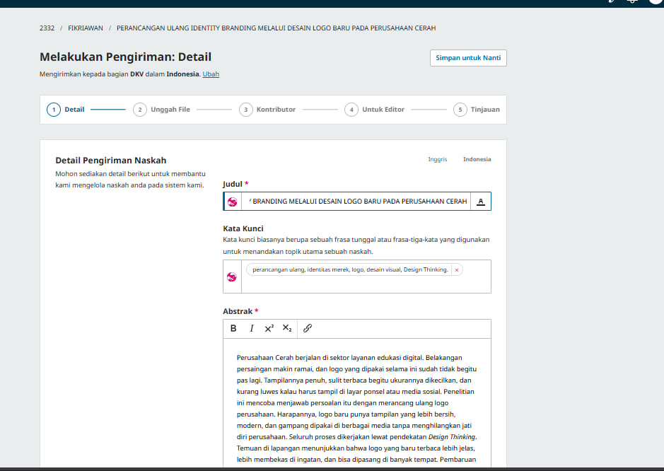
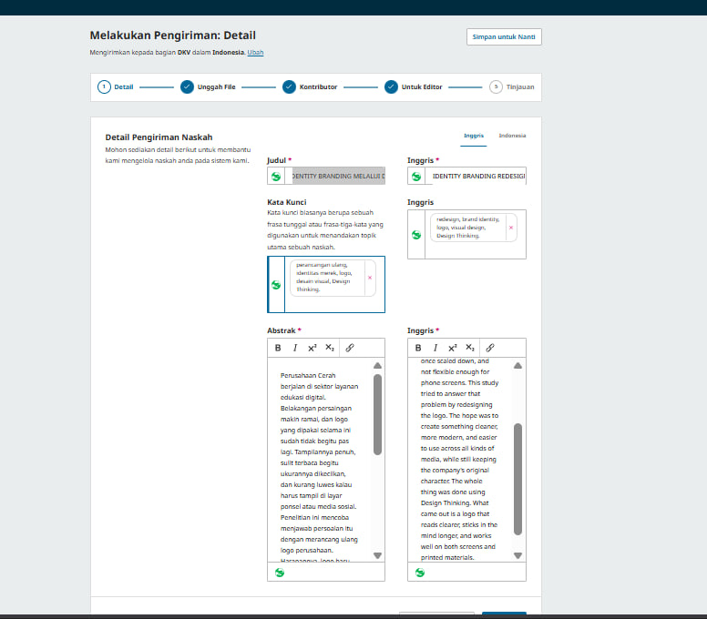
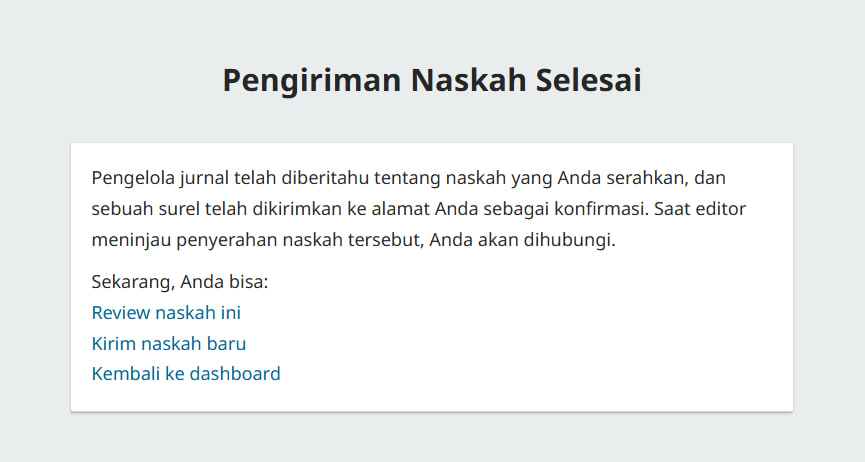

Bukti Submit Jurnal
DIMAS ARIF FIKRIAWAN • 24.240.0075
Tujuan Jurnal: Jurnal Informatika dan Komputer (JIK) UNSIDA
Alamat: https://journal.unusida.ac.id/index.php/jik/id

Keterangan: Ini adalah tangkapan layar saat proses pendaftaran dan pengisian data penulis di sistem jurnal JIK UNSIDA. Saya sudah memasukkan identitas lengkap, afiliasi, serta informasi kontak yang sesuai dengan ketentuan penulisan jurnal. Proses ini dilakukan untuk memastikan data tercatat dengan benar di sistem sebelum mengunggah naskah.

Keterangan: Berikut bukti saat tahap pengunggahan naskah penelitian. Naskah yang dikirim berjudul "Analisis dan Penerapan Metode [Sesuaikan Judul Anda] untuk [Tujuan Penelitian]" yang sudah disesuaikan dengan format dan panduan penulisan yang berlaku di Jurnal Informatika dan Komputer UNSIDA, termasuk penulisan daftar pustaka dan struktur isi.

Keterangan: Ini adalah halaman konfirmasi dari sistem jurnal setelah proses pengiriman selesai. Naskah sudah terdaftar dan masuk ke dalam antrian peninjauan oleh tim redaksi. Sistem juga mengirimkan pemberitahuan melalui email untuk memantau perkembangan status naskah selanjutnya.
← Kembali ke Halaman Utama